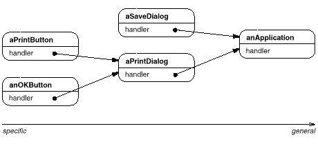
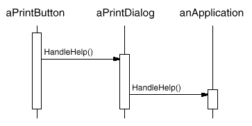
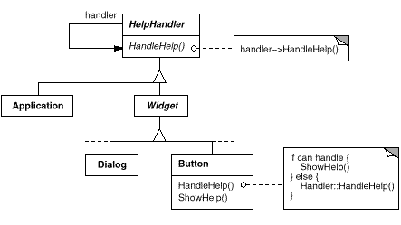
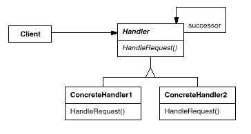
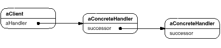

class HelpHandler {
public:
HelpHandler(HelpHandler* s) : _successor(s) { }
virtual void HandleHelp();
private:
HelpHandler* _successor;
};
void HelpHandler::HandleHelp () {
if (_successor) {
_successor->HandleHelp();
}
}
void Handler::HandleRequest (Request* theRequest) {
switch (theRequest->GetKind()) {
case Help:
// cast argument to appropriate type
HandleHelp((HelpRequest*) theRequest);
break;
case Print:
HandlePrint((PrintRequest*) theRequest);
// ...
break;
default:
// ...
break;
}
}
class ExtendedHandler : public Handler {
public:
virtual void HandleRequest(Request* theRequest);
// ...
};
void ExtendedHandler::HandleRequest (Request* theRequest) {
switch (theRequest->GetKind()) {
case Preview:
// handle the Preview request
break;
default:
// let Handler handle other requests
Handler::HandleRequest(theRequest);
}
}

typedef int Topic;
const Topic NO_HELP_TOPIC = -1;
class HelpHandler {
public:
HelpHandler(HelpHandler* = 0, Topic = NO_HELP_TOPIC);
virtual bool HasHelp();
virtual void SetHandler(HelpHandler*, Topic);
virtual void HandleHelp();
private:
HelpHandler* _successor;
Topic _topic;
};
HelpHandler::HelpHandler (
HelpHandler* h, Topic t
) : _successor(h), _topic(t) { }
bool HelpHandler::HasHelp () {
return _topic != NO_HELP_TOPIC;
}
void HelpHandler::HandleHelp () {
if (_successor != 0) {
_successor->HandleHelp();
}
}
class Widget : public HelpHandler {
protected:
Widget(Widget* parent, Topic t = NO_HELP_TOPIC);
private:
Widget* _parent;
};
Widget::Widget (Widget* w, Topic t) : HelpHandler(w, t) {
_parent = w;
}
class Button : public Widget {
public:
Button(Widget* d, Topic t = NO_HELP_TOPIC);
virtual void HandleHelp();
// Widget operations that Button overrides...
};
Button::Button (Widget* h, Topic t) : Widget(h, t) { }
void Button::HandleHelp () {
if (HasHelp()) {
// offer help on the button
} else {
HelpHandler::HandleHelp();
}
}
class Dialog : public Widget {
public:
Dialog(HelpHandler* h, Topic t = NO_HELP_TOPIC);
virtual void HandleHelp();
// Widget operations that Dialog overrides...
// ...
};
Dialog::Dialog (HelpHandler* h, Topic t) : Widget(0) {
SetHandler(h, t);
}
void Dialog::HandleHelp () {
if (HasHelp()) {
// offer help on the dialog
} else {
HelpHandler::HandleHelp();
}
}
class Application : public HelpHandler {
public:
Application(Topic t) : HelpHandler(0, t) { }
virtual void HandleHelp();
// application-specific operations...
};
void Application::HandleHelp () {
// show a list of help topics
}
const Topic PRINT_TOPIC = 1;
const Topic PAPER_ORIENTATION_TOPIC = 2;
const Topic APPLICATION_TOPIC = 3;
Application* application = new Application(APPLICATION_TOPIC);
Dialog* dialog = new Dialog(application, PRINT_TOPIC);
Button* button = new Button(dialog, PAPER_ORIENTATION_TOPIC);
button->HandleHelp();